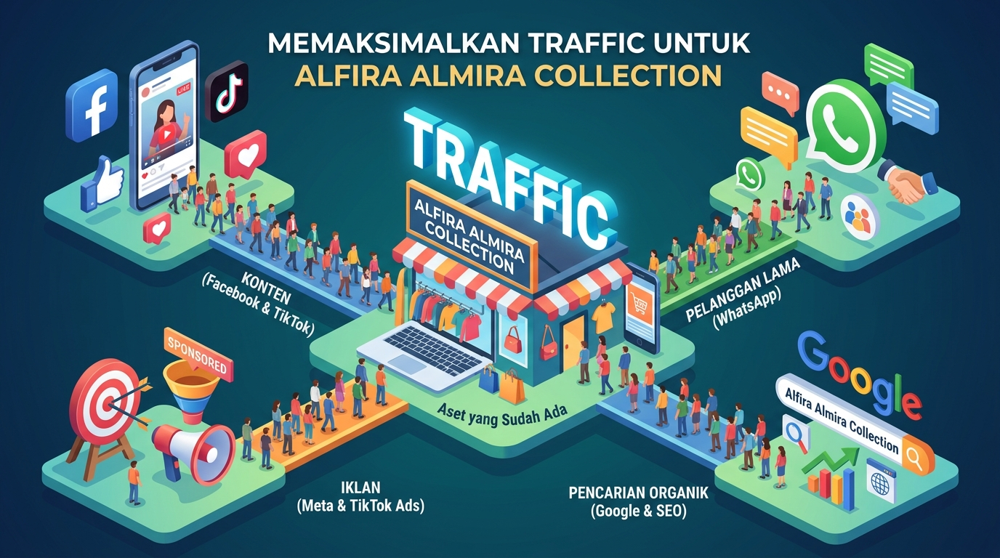
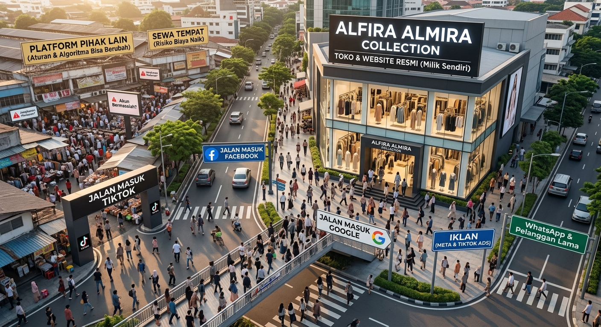

Setelah melihat pembahasan tentang marketplace tadi, menurut saya kita tidak harus buru-buru mencari tempat baru untuk berjualan. Saya justru menyarankan kita mulai dari sesuatu yang sudah dimiliki saat ini,
Salah satu hal yang paling dibutuhkan AAC saat ini adalah:
TRAFFIC.Traffic adalah orang-orang yang datang dan melihat apa yang kita tawarkan traffic bisa datang dari berbagai sumber, misalnya dari media sosial, dari mesin pencari (SEO google), dari iklan, atau dari rekomendasi orang lain.
Saat ini AAC sudah memiliki beberapa aset digital yang bisa dimaksimalkan untuk mendatangkan traffic,diantaranya:
Jadi sebenarnya kita sudah memiliki beberapa jalan untuk mendatangkan orang.
sekarang fokus kita alihkan ke Bagaimana cara,mendatangkan orang (traffik) ke channel atau toko
kita.
Tetapi ada satu hal yang menurut saya perlu kita pikirkan.
Kalau selama ini orang-orang tersebut datang melalui platform milik orang lain (fb,ig,tiktok), lalu apa yang terjadi kalau suatu hari platform tersebut berubah? Misalnya algoritmanya berubah. Aturannya berubah. Jangkauan konten menurun. Biaya iklan meningkat. Akun mengalami masalah. Atau karena suatu kondisi yang sama sekali berada di luar kendali kita, akses terhadap platform tersebut terganggu. Kita tidak tahu apakah hal-hal tersebut akan terjadi. Dan saya juga tidak mengatakan bahwa kita harus meninggalkan media sosial atau marketplace.

Justru sebaliknya. Media sosial dan marketplace tetap harus kita gunakan. kita juga perlu memiliki aset digital yang kita kendalikan sendiri. Karena kalau seluruh aktivitas digital kita hanya bergantung pada platform pihak lain, maka sebagian dari perjalanan bisnis kita juga ikut bergantung pada keputusan dan perubahan yang terjadi di platform tersebut. Analoginya sederhana. Kalau kita berjualan di sebuah tempat yang bukan milik kita, kita memang bisa mendapatkan banyak pengunjung. Tetapi kita juga harus mengikuti aturan tempat tersebut. Sekarang bayangkan kalau kita juga mempunyai tempat sendiri. Pengunjung tetap bisa datang dari mana saja. Facebook bisa menjadi salah satu jalan masuk TikTok bisa menjadi jalan masuk yang lain. Iklan bisa menjadi jalan masuk. Google juga bisa menjadi jalan masuk. Tetapi semuanya bisa diarahkan ke tempat yang kita miliki sendiri.
Website bukan untuk menggantikan Facebook. Bukan untuk menggantikan TikTok. Dan bukan untuk menggantikan marketplace. Tetapi menjadi aset digital milik AAC sendiri.
Pertama, AAC memiliki aset digital sendiri. Kita tidak sepenuhnya bergantung pada satu platform untuk menjalankan aktivitas digital.
Kedua, website bisa diakses 24 jam.Tidak ada jam buka dan jam tutup seperti toko fisik.Customer bisa melihat produk dan mendapatkan informasi kapan pun mereka ingin, bahkan ketika tidak ada admin yang sedang online.
Ketiga, bisnis bisa terlihat lebih profesional. Customer memiliki satu tempat resmi untuk mengenal AAC, melihat produk, mengenal brand yang tersedia, dan melakukan pembelian.
Keempat, kita memiliki ruang yang lebih besar untuk mengatur pengalaman customer. Kita bisa menentukan bagaimana produk ditampilkan, bagaimana kategori dibuat, bagaimana brand ditampilkan, dan bagaimana customer diarahkan dari satu produk ke produk lainnya.
Kelima, traffic dari berbagai sumber bisa diarahkan ke satu aset yang sama. Facebook, TikTok, iklan, Google, maupun WhatsApp tidak harus berjalan sendiri-sendiri. Semuanya bisa menjadi jalan yang mengarahkan customer ke website AAC.
Website tidak otomatis mendatangkan customer. Membuat website membutuhkan biaya, waktu, pengelolaan teknis, maintenance, keamanan, dan pengelolaan sistem. Dan setelah website selesai dibuat, pekerjaan belum selesai. Kita tetap harus membangun traffic. Tetap harus membuat konten. Tetap harus melakukan promosi. Tetap harus melayani customer. Jadi website bukanlah mesin ajaib yang tiba-tiba membuat omzet naik.
Website adalah tempatnya. Traffic adalah orang yang datang. Konten, database, iklan, Google, media sosial, dan channel lainnya adalah jalan yang mendatangkan mereka.
Karena itu, menurut saya kita tidak perlu memilih: Media sosial atau website? Marketplace atau website?
Tetapi:Bagaimana semua channel tersebut bisa bekerja bersama, sementara AAC mulai memiliki
aset digitalnya sendiri?
Kalau kita ingin membangun bisnis yang lebih siap menghadapi perubahan ke depan, memiliki aset yang kita kendalikan sendiri adalah sesuatu yang layak untuk dipertimbangkan.
Bukan karena kita tahu apa yang akan terjadi dengan platform lain. Tetapi karena kita tidak pernah bisa sepenuhnya mengendalikan apa yang terjadi di luar bisnis kita.
Yang bisa kita kendalikan adalah seberapa siap kita ketika perubahan itu datang!!!